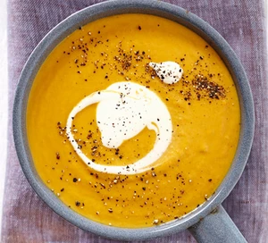

Soup
Sweet potato soup

Description
It's winter guys! And I know we're all just in the mood for some good soup
This BBC good food recipe is tried and tested, and I just know it'll warm your heart and soul!
Ingredients
- 500g sweet potatoes peeled and cut into chunks
- 300g carrots peeled and cut into chunks
- 3tbsp olive oil
- 2 onions finely chopped
- 2 garlic cloves crushed
- 1L vegetable stock
Method
- Heat oven to 220C/200C fan/ gas 7 and put 500g chunked sweet potatoes and 300g chunked carrots into a large roasting tin, drizzled with 2 tbsp olive oil and plenty of seasoning.
- Roast the vegetables in the oven for 25-30 mins or until caramelised and tender.
- Meanwhile, put the remaining 1 tbsp olive oil in a large deep saucepan and fry 2 finely chopped onions over a medium-low heat for about 10 mins until softened.
- Add 2 crushed garlic cloves and stir for 1 min before adding 1l vegetable stock. Simmer for 5-10 mins until the onions are very soft, then set aside.
- Once the roasted vegetables are done, leave to cool a little, then transfer to the saucepan and use a hand blender to process until smooth.
- Serve in bowls topped with a good grinding of black pepper.
Home